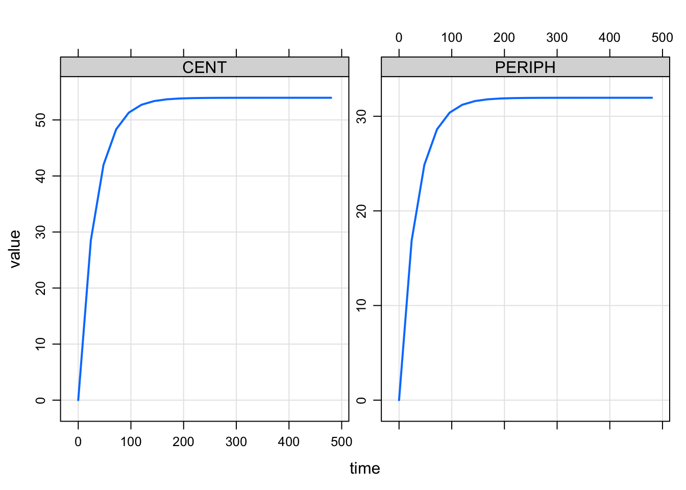

When mrgsolve 0.10.0 was released in October, 2019, we made some changes to how the PK system was advanced to steady state. This gave better control over the process and more-faithful result. But it also created opportunities for users to see warning messages that they hadn’t seen before. Further changes were made in the 0.10.1 release in February, 2020.
This blog post describes the mechanism by which mrgsolve finds steady state under this new change set (starting late 2019 to early 2020) and describes some of the settings that users can control to their advantage.
ss_n to put an upper cap on number of doses to give when finding SSss_fixed to silence warnings when ss isn’t metss_cmt (in [ set ]) to include or exclude certain compartments for consideration when finding SSSS_ADVANCE logical flag in [ ode ] to not advance certain compartments when mrgsolve is working to find SSIt’s important to recognize that SS is related to the PK dosing system. It is finding the state of the system after an infinite number of doses have been administered under a certain regimen. And this is essentially how mrgsolve goes about finding steady state.
Let’s load a PK model
And let’s imagine a 100 mg QD dosing regimen
And give that dose a large number of times
Let’s just look at trough concentrations and see how the trough develops over the dosing period
And simulate that out

Obviously, the trough concentration starts to increase and after a certain period stops changing
. ID time CENT PERIPH
. 17 1 360 53.95222 31.95587
. 18 1 384 53.95257 31.95608
. 19 1 408 53.95274 31.95618
. 20 1 432 53.95281 31.95622
. 21 1 456 53.95285 31.95625
. 22 1 480 53.95287 31.95626Looking at the compartment amount at the last trough compared to the second to the last trough, the amounts aren’t changing very much. This is how mrgsolve finds steady state: it keeps giving the dose at the dosing interval until the pre-dose concentration stops changing very much.
We need some criterion to determine how much change in pre-dose concentration we’ll tolerate an still call it good enough. mrgsolve uses the local error estimate for the differential equation solver to determine this. This is determined by both rtol (the relative tolerance) and atol (the absolute tolerance). So once the difference between two trough concentrations is less than A\(_{trough}\) * rtol + atol, then the system is said to be at steady state. This calculation is done for every single compartment in the model and all compartments have to meet this criteria before the system is said to be at steady state. So, increasing rtol (say from 1e-8 to 1e-3) will give us less precision in the answer and it will also allow us to call it “good” with respect to steady state sooner. When using one of the analytical models (one- and two-compartment models not solved by ODEs), then changing rtol will have no influence on the answer (the answer is known in closed form) but will continue to influence how easily and quickly steady state is achieved.
When the volume is larger, it will take more doses to get to steady state and more time and work for us to get to that place. Sometimes, simulated (many doses) to reach steady state. The mrgsim function has an argument called ss_n. This is the maximum number of doses that will be given when trying to find steady state before mrgsolve gives up, issues a warning and keeps going with the problem. The default value is 500. So, if the system gives 500 doses and still can’t say that the system is at steady state, it will stop, issue a warning and keep going with the problem. If you were expecting the system to reach steady state before 500 doses, then it might be good to go back and look at the model structure or look at the parameters.
It might be that just a handful of individuals are taking a very long time and you’re fine with just cutting them off after the 500th dose. In that case, you can invoke the ss_fixed argument. ss_fixed is false by default, ensuring that you will get a warning message if the system fails to reach steady state. But if you set ss_fixed to true, then the system will give up to ss_n doses and stop without warning. So, here are the possibilities with ss_n equal to 500:
ss_fixed is true or falsess_fixed is false: keep going after issuing a warning that the SS process failedss_fixed is true: keep going without issuing a warningWell, you might have seen some warnings come up and wondered why.
Sometimes it happens that you have simulated parameters with very long half-life and very long time to steady state, even more than 500 doses. It might happen in 1 or 2 out of 3000 simulated individuals and it will still give the warning. So it might be that you have to set ss_n to something reasonable and also set ss_fixed to true so that you don’t get the warnings.
I have seen this with the dosing compartment when there is a very large interdose interval. So the amount gets driven very small, maybe flips sign and the calculations for steady state just don’t work out right to call it “good”. Here’s what you can do:
In your model, you can now give a vector of compartment to not look at for handling steady state:
[ set ] ss_cmt = "-DEPOT"
[ cmt ] DEPOT CENT PERIPH
[ ode ]
dxdt_DEPOT = ...;
dxdt_CENT = ...;
dxdt_PERIPH = ...;The -DEPOT says “forget about the DEPOT compartment when running up to steady state”; it was giving me numerical problems and I don’t really care about that one so much either.
Let’s say you’re accumulating stuff in a compartment for AUC calculation. When you have this in the model, you’ll never make it to steady state according to the definition set out above.
[ set ] ss_cmt = "-AUC"
[ cmt ] DEPOT CENT PERIPH AUC
[ ode ]
dxdt_DEPOT = ...;
dxdt_CENT = ...;
dxdt_PERIPH = ...;
dxdt_AUC = CENT/V;Rather than trying to figure that out under the hood, mrgsolve just asks you to tell it to forget about the AUC compartment when determining steady state.
There is another (better) way to handle this. Users have a new variable that they can check that evaluates to true when mrgsolve is advancing the system to steady state. So you might write this:
[ cmt ] DEPOT CENT PERIPH AUC
[ ode ]
dxdt_DEPOT = ...;
dxdt_CENT = ...;
dxdt_PERIPH = ...;
dxdt_AUC = CENT/V;
if(SS_ADVANCE) dxdt_AUC = 0;This will prevent the AUC compartment from advancing at all when mrgsolve is looking for steady state. And this compartment won’t be a stumbling block for the SS determination (as described above).
Rather than excluding the misbehaving compartment, we can also request that only one compartment be evaluated for SS
[ set ] ss_cmt = "CENT"
[ cmt ] DEPOT CENT PERIPH
[ ode ]
dxdt_DEPOT = ...;
dxdt_CENT = ...;
dxdt_PERIPH = ...;This ignores every compartment except for CENT when figuring out SS.
ss_n to put an upper cap on number of doses to give when finding SSss_fixed to silence warnings when ss isn’t metss_cmt (in [ set ]) to include or exclude certain compartments for consideration when finding SSSS_ADVANCE logical flag in [ ode ] to not advance certain compartments when mrgsolve is working to find SSI hope this has been helpful to explain steady state concepts in mrgsolve and you have better control of this process in your modeling workflow. I do see some additional opportunities potentially coming in the future, like asking the steady state finder to use a different rtol than that which is used for solving differential equations. For the time being, we’ll play with this configuration and see what additional changes would be helpful.
mrgsolve: mrgsolve.github.io | metrum research group: metrumrg.com